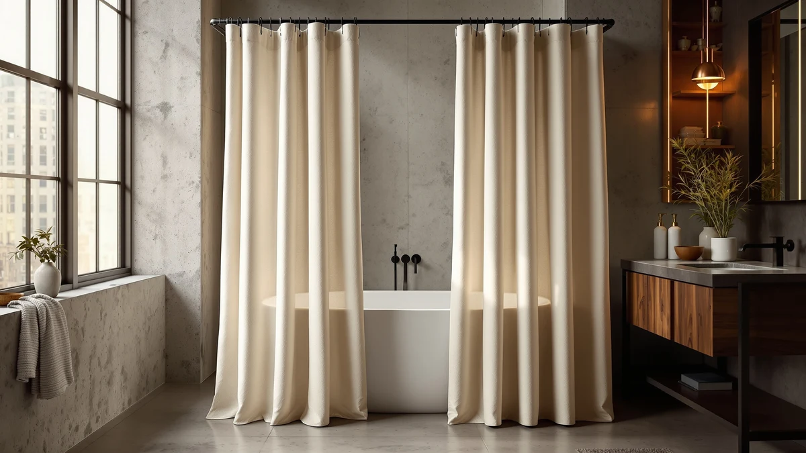

Donren Livingroom Length Linen Textured Curtains Review (2026): Worth It?
Prices and picks verified as of November 2026. Independent, reader-supported reviews.


Quick Answer
This Donren Livingroom Length Linen Textured Curtains review found the two-panel set to be a solid pick for spaces that need extra height and width, with 52 by 108 inch panels that run well beyond a standard curtain, all for $42.53. Shoppers who only need to cover a standard window or shower, or who want a published review history to lean on, should compare it against BTTN, ANRODUO, or Dynamene below first.
Our pick: DONREN Livingroom 108 Inch Length, $42.53 Check Price on Amazon
Bottom line: our top pick is the DONREN Livingroom 108 Inch Length Linen Textured Curtains - 2 at $42.53.
Things to Know Before You Buy
- The DONREN Livingroom 108 Inch Length set ships as two panels, each 52 inches wide by 108 inches long, in a polyester and PEVA blend finished with a linen-look texture.
- At $42.53, it costs roughly $6 to $7 more than the three alternatives compared here, which range from $35.99 to $36.99.
- The extra height, 108 inches versus a standard 72 to 74 inch curtain, suits a living room divider, a wide window, or a shower with a rod mounted well above the floor.
- The listing does not publish a star rating or review count, so there is no track record to weigh against the three alternatives.
This Donren Livingroom Length Linen Textured Curtains review puts the two-panel set's 52 by 108 inch size, $42.53 price, and polyester and PEVA build next to three scalloped and waffle-weave curtains shoppers often compare it against. The extra height sets the DONREN set apart from most curtains in this comparison, since a rod mounted well above a standard shower stall, or a living room divider that needs to reach floor to ceiling, can leave a gap that a 72 or 74 inch curtain cannot close. That single sizing choice shapes who this set fits and who should look elsewhere.
We built this comparison from the product specs, current pricing, and listing details for all four curtains, since none of the four have published a star rating or review count to weigh. At $42.53, the DONREN set costs more than BTTN, ANRODUO, and Dynamene, which range from $35.99 to $36.99, and that premium buys two extra-tall panels rather than a different fabric. A reader who needs the 108 inch length can stop at the specs table below; a reader comparing four curtains in a similar price range needs the detail that follows.
Why You Should Trust Us
Ilane Tall has covered bathroom and window textiles for Best Shower Curtains since the site launched, and this Donren Livingroom Length Linen Textured Curtains review follows the same research process used throughout the site: comparing manufacturer specs, current pricing, and listing details rather than running a physical testing lab. We do not own a lab, and we do not claim hands-on use of any curtain we cover. Instead, we pull listed dimensions, materials, and prices straight from the retailer, then weigh them against the other scalloped and waffle-weave options shoppers consider alongside it. Readers can find the full methodology behind every review on this site on our how we research page. We used that same approach for this review, from the pricing comparison to the final verdict.
Our Research Experience
Our process for this Donren Livingroom Length Linen Textured Curtains review starts with the manufacturer's own listing: material, dimensions, and price, cross-checked against BTTN, ANRODUO, and Dynamene on the same criteria. None of the four listings publish a star rating or review count, so we could not weigh verified owner feedback the way we do for better-documented products, and this review notes that gap rather than inventing a score. We did not purchase, install, or hang any of the four curtains ourselves. The comparison instead rests on what each listing states about size, material, and price, and on how those specs line up against what a shopper covering a tall window, a divider, or a shower actually needs.
Overview & Specs

DONREN Livingroom 108 Inch Length
What we like
- 108 inch length covers spaces a standard curtain leaves short
- Ships as two 52 inch wide panels, enough to cover a wide window, divider, or extra-wide shower
- Polyester and PEVA blend resists water and wrinkles better than woven linen
Flaws but not dealbreakers
- At $42.53, it costs $6 to $7 more than the three alternatives compared here
- The listing does not publish a star rating or review count
| Material | Polyester / PEVA |
| Size | 52"W x 108"L (Pack of 2) |
DONREN builds this set around extra height and coverage. Instead of a single 72 by 74 inch panel, the set ships as two panels, each 52 inches wide by 108 inches long, a combined width wide enough to cover a large window, a room divider, or a shower with a rod mounted higher than a standard stall calls for. At $42.53, it costs more than BTTN, ANRODUO, and Dynamene, each priced between $35.99 and $36.99, and that premium buys the second panel and the added 34 to 36 inches of length rather than a different fabric. The curtain uses a polyester and PEVA blend finished with a linen-like texture, a pairing that favors durability and easy cleaning over the breathable feel of actual woven linen.
Because the extra length and the second panel are the main selling points, a shopper who only needs to cover a standard window or a single shower stall will pay for size they do not need. The listing also skips a public star rating or review count, which makes it harder to gauge how the fabric, or the scalloped alternatives below, have held up for other buyers. For a space where a standard 72 or 74 inch curtain consistently falls short, the DONREN Livingroom 108 Inch Length set closes that gap, even if its price sits above the three shorter alternatives in this comparison.
What We Liked
The biggest draw in this Donren Livingroom Length Linen Textured Curtains review is the 108 inch length paired with a two-panel set. Most curtains in this comparison top out around 72 to 90 inches in a single panel, so the extra height and the second panel solve a specific problem: a window, divider, or shower that a standard-size curtain cannot fully cover. The polyester and PEVA blend also resists wrinkling and water better than woven linen, which matters in a living room with sun exposure or a bathroom with regular humidity. At $42.53, the price increase over BTTN, ANRODUO, and Dynamene is modest enough that the extra coverage reads as a practical upgrade rather than a premium one.
What Could Be Better
The $42.53 price on the DONREN set is the clearest tradeoff. It runs $6 to $7 above the three scalloped and waffle-weave alternatives in this comparison, and a shopper who only needs to cover a standard window or shower stall pays for length and width they will not use. DONREN also has not published a star rating or review count, so buyers cannot lean on a track record the way they might with a more established listing. That gap does not mean the curtains perform poorly, but it does mean this review has less third-party data to draw on than it would for a rated product. Shoppers who weigh a review history heavily before buying should treat the missing rating as a real factor, not a minor footnote.
Who Is It For?
The DONREN Livingroom 108 Inch Length set fits a shopper covering a tall window, a room divider, or a shower whose rod sits higher than a standard 72 to 74 inch curtain reaches, since the 108 inch length and two-panel width are built specifically to close that gap. It also suits anyone furnishing a wide opening who would otherwise need to buy two separate curtains to get the same coverage. Shoppers with a standard-size window or shower, or anyone who wants a published review history to lean on before buying, should compare it against BTTN, ANRODUO, or Dynamene first. A shopper outfitting several rooms or bathrooms at once might also browse our best extra long shower curtains guide for a wider set of tall-curtain options beyond these four.
Alternatives to Consider
If the DONREN set's extra height or its $42.53 price is not what your space needs, these three alternatives cover two scalloped linen-look patterns and a waffle-weave texture, all priced between $35.99 and $36.99, a few dollars less than DONREN.

Also Great
BTTN 108x72 Boho Scalloped Linen
At $36.99, BTTN's 108 by 72 inch set keeps DONREN's extra length but swaps the plain edge for a boho scalloped hem. It is a close match in size at a lower price if the scalloped detail appeals to you.
$36.99
Check Price on Amazon
Also Great
ANRODUO Olive Green Scalloped Linen
Priced at $36.99, ANRODUO's Olive Green Scalloped Linen curtain trades DONREN's neutral tone and two-panel width for a single olive green panel with the same scalloped hem as BTTN. It is a straightforward swap if you want more color at the same price as BTTN.
$36.99
Check Price on Amazon
Best Value
Dynamene Extra Wide Waffle Shower
Dynamene's Extra Wide Waffle Shower curtain undercuts the group at $35.99 and swaps the linen-look texture for a waffle weave. It is worth comparing if texture matters more to you than matching DONREN's exact length.
$35.99
Check Price on AmazonHow big is the DONREN Livingroom 108 Inch Length curtain set?
It ships as two panels, each 52 inches wide by 108 inches long, for a combined width of 104 inches.
What is the DONREN Livingroom curtain made of?
It is made from a polyester and PEVA blend finished with a linen-look texture, not actual woven linen.
Frequently Asked Questions
How big is the DONREN Livingroom 108 Inch Length curtain set?
It ships as two panels, each 52 inches wide by 108 inches long, for a combined width of 104 inches. That is 34 to 36 inches taller than the three scalloped and waffle-weave alternatives in this comparison.
What is the DONREN Livingroom curtain made of?
It is made from a polyester and PEVA blend finished with a linen-look texture, not actual woven linen. The blend favors water resistance and wrinkle resistance over the breathable hand of real linen.
Is the Donren Livingroom Length Linen Textured Curtains set worth it compared to BTTN, ANRODUO, and Dynamene?
At $42.53, it costs $6 to $7 more than the three alternatives, which range from $35.99 to $36.99. None of the four listings publish a star rating or review count, so the extra length and second panel, not a proven track record, are what justify the higher price.
Final Verdict
This Donren Livingroom Length Linen Textured Curtains review comes down to coverage versus price. DONREN is the only set in this comparison built as two 52 by 108 inch panels, and that extra height and width are its real reason to exist, not its price, since it costs $6 to $7 more than BTTN, ANRODUO, and Dynamene. Dynamene undercuts the group at $35.99 with a waffle-weave texture, while BTTN and ANRODUO sit a dollar higher at $36.99 with a matching scalloped hem in different colors. None of the four listings publish a star rating or review count, so the choice rests on size, texture, and price rather than a proven track record. For a window, divider, or shower that a standard 72 to 74 inch curtain leaves short, the DONREN Livingroom 108 Inch Length set is the pick worth choosing. Shoppers who do not need the extra coverage should compare BTTN, ANRODUO, or Dynamene instead, since all three save a few dollars without giving up much.